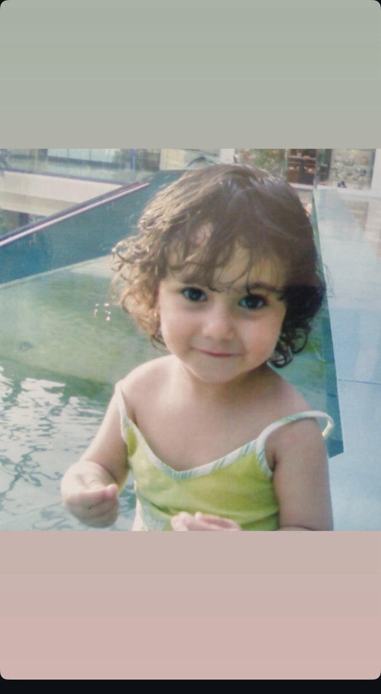
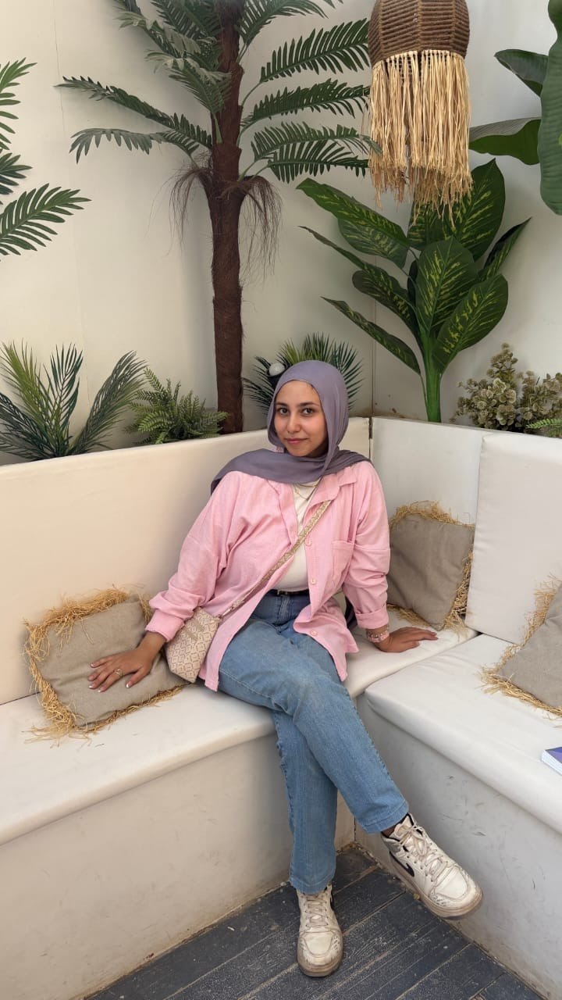
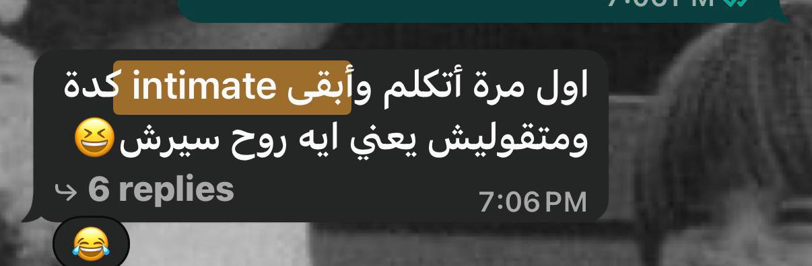
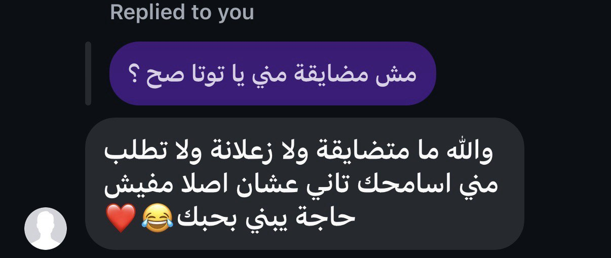
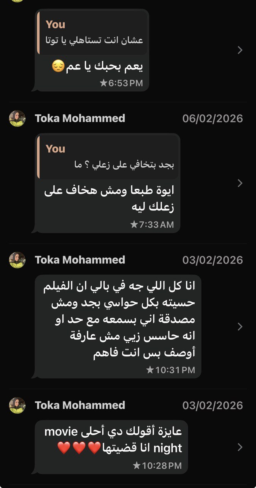

دي البداية… ضحكة بريئة
❤️ هنا تكبر القصة 💚

كبرتي… وبقيتي الحُب كله



"بين الأحمر اللي بيعبر عن حبي ليك"
"والأخضر اللي انت بتحبيه"
"كان اختيارك أسهل قرار في حياتي"
انتي الأحمر اللي خلاني أحس،
والأخضر اللي خلاني أكمّل.